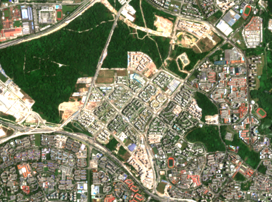
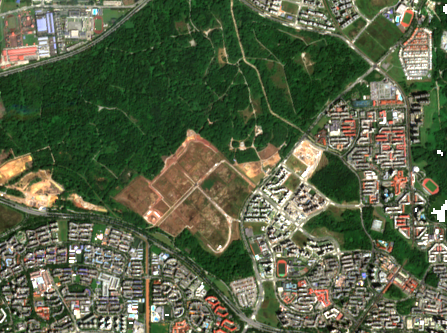
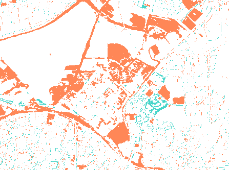

GeoAsk
A sensor-agnostic platform for geospatial foundation models: satellite imagery analysis, change detection, pattern-of-life detection and photo geolocation, asked in plain language. It works anywhere on Earth and runs on your own computer, with no API keys.
“How much vegetation did Tengah lose between 2019 and 2026?”


2019-01-012026-03-25Drag to compare. Sentinel-2 L2A at 10 m. These are the clearest dates in each year, ranked by clear pixels inside Tengah.

What it does
- Change of any kind with foundation-model embeddings (Clay v1.5), or targeted change in vegetation, water and built-up land.
- Pattern of life at sea. Vessels on every Sentinel-1 radar pass (day, night, through cloud), with SAHI-style slicing, a density map and unusually busy or quiet days flagged.
- Terrain. Elevation, slope, viewshed and line of sight from the Copernicus 30 m elevation model.
- Mapping for field use. MGRS grid, coordinates in decimal, DMS, MGRS and UTM, distance and bearing in degrees and mils, hillshade and 3D terrain.
- Locate: where was this photo taken? A Claude agent reads the clues in street, aerial or satellite photos, checks them against open map data, reference photos, satellite imagery and terrain, and returns likely areas with a confidence, never a pinpoint, and never anything about people.
- Super-resolution for viewing. 10 m to 2.5 m with SEN2SR, physically constrained and shown with a consistency map. Never used for measurement.
How it works
- Streams only what it needs. Pixels for your area are read straight from Cloud-Optimized GeoTIFFs in open data buckets using HTTP range requests. No scenes are downloaded and no server is involved.
- Works with any sensor. Bands are looked up by wavelength, not by name. Any satellite with a red and a near-infrared band can answer a vegetation question, and a sensor without them gets a clear refusal, not a guess.
- Any foundation model. One encoder interface and registry: Clay v1.5 runs today, and Prithvi, DOFA, TerraMind, Galileo and Copernicus-FM are declared. Detectors and super-resolution models plug in the same way.
- Numbers you can trust. A local language model (Qwen 2.5 7B) only decides which tools to run. Deterministic code computes every number from native-resolution pixels, and every number in the written answer is checked against the measurements.
Try it
uv venv && uv pip install -e ".[serve]" geoask serve # http://127.0.0.1:8787/app/ geoask activity --bbox 103.74 1.20 103.86 1.26 --window 2026-08-01/2026-11-20
Runs on Linux and macOS. The full plan is in docs/PLAN.md.